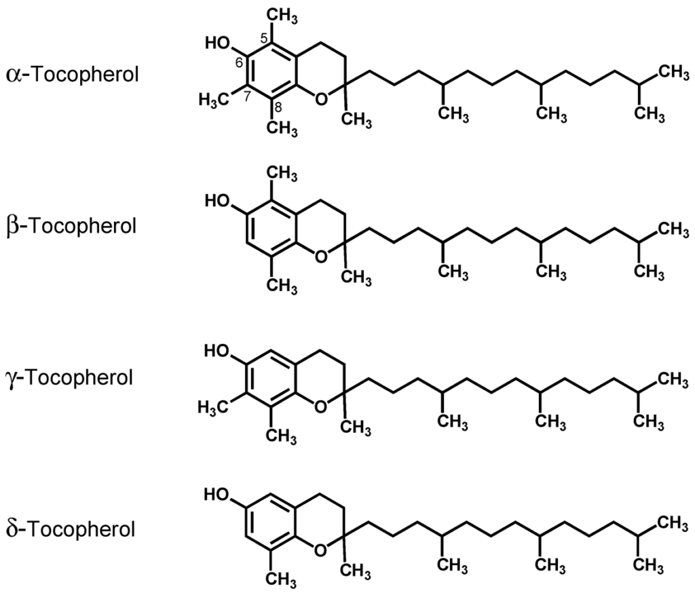
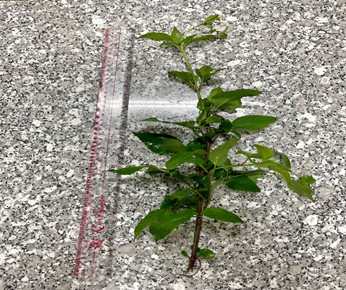
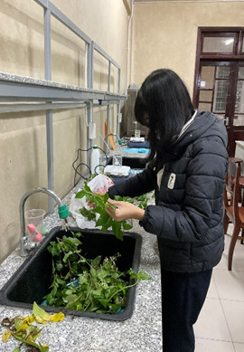
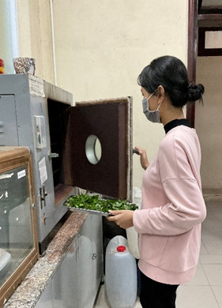

Hoạt tính ức chế tế bào ung thư và hoạt tính chống oxy hóa là một trong những hoạt tính sinh học quan trọng được xem xét phổ biến nhất trên khía cạnh sử dụng thực phẩm hay dược liệu để phòng bệnh và chữa bệnh.
Theo dự báo đến năm 2030, trên thế giới, số người chết vì ung thư hàng năm khoảng 12 triệu người.
Tỷ lệ chết do ung thư ở Việt Nam ngày càng tăng cao.
Sự gia tăng nhanh chóng căn bệnh ung thư đang là một cuộc khủng hoảng thực sự cho sức khỏe cộng đồng và hệ thống y tế trên toàn thế giới. Ung thư có thể là hệ quả lâu dài do ảnh hưởng của các tác nhân oxy hóa [1, 2].
Vì vậy, việc bổ sung các chất chống oxy hóa từ thực vật để kiểm soát hàm lượng ổn định của các gốc tự do mang lại nhiều lợi ích tốt cho cơ thể cũng như bảo vệ sự toàn vẹn của tế bào, ngăn ngừa được một số tai biến, làm chậm quá trình lão hoá cơ thể, bảo vệ chức năng gan, hạn chế các tác nhân gây viêm, bảo vệ chức năng của hệ thần kinh, điều trị bệnh Alzheimer và Parkinson [3-5].
Xuyến chi là một loài cỏ hết sức quen thuộc, có thể bắt gặp ở khắp mọi nơi, từ đồng cỏ, đất hoang đến bên vệ đường hay trong vườn nhà. Xuyến chi còn có nhiều tên gọi khác như Đơn buốt, Đơn kim, Cúc vệ đường,..., là một loài thực vật thân thảo họ Cúc, có tên khoa học là Bidens pilosa. Xuyến chi có nguồn gốc từ châu Mỹ nhưng hiện tại phân bố đều khắp các vùng ấm trên thế giới [6, 7]. Ở Việt Nam, Xuyến chi phân bố khắp các tỉnh thành từ Bắc vào Nam.
Theo Đông y, Xuyến chi có vị đắng, nhạt, hơi cay và tính mát nên có tác dụng tốt trong việc thanh nhiệt cho cơ thể, giải độc, sát trùng các vết thương, chống viêm, đã được dân gian sử dụng để điều trị các bệnh như viêm họng, sưng họng phát sốt, viêm ruột, tiêu chảy, kiết lỵ hay các bệnh ngoài da như dị ứng, mày đay, ngứa... Có thể dùng lá Xuyến chi giã nát đắp trực tiếp vào những vết côn trùng cắn, rắn cắn để chống viêm [6, 7]. Trên thế giới đã có một số công bố về thành phần hóa học và hoạt tính sinh học của Xuyến chi [8-10]. Các tác dụng dược lý hiện đại cho thấy: Xuyến chi có tác dụng ức chế miễn dịch, chống viêm, chống oxy hóa và ức chế tế bào ung thư [6, 7, 11, 12]. Các kết quả này cũng chỉ ra rằng, hàm lượng các hoạt chất và hoạt tính sinh học của các loài phân bố ở các nước là khác nhau, có thể do điều kiện sinh trưởng hay tách chiết khác nhau. Qua tra khảo tài liệu, có nhiều công trình nghiên cứu về loài Xuyến chi này, tuy nhiên các công trình nghiên cứu về thành phần hóa học và hoạt tính chống oxy hóa thì còn nhiều hạn chế. Ở Việt Nam, chưa tìm thấy công trình nghiên cứu nào về thành phần hóa học và hoạt tính sinh học của Xuyến chi.
Nhằm nghiên cứu sâu hơn và đầy đủ hơn về thành phần hóa học và tác dụng dược lý để nâng cao hơn nữa giá trị sử dụng của loài Xuyến chi. Chúng tôi đề xuất đề tài: “Nghiên cứu thành phần hóa học và hoạt tính sinh học của Xuyến chi”.
Làm sáng tỏ thành phần hóa học và hoạt tính sinh học trong cao chiết cây Xuyến chi - Bidens pilosa.
Xác định được tác dụng chống oxy hóa của loài Xuyến chi.
Cung cấp thông tin về thành phần hóa học và hàm lượng của một số nhóm hoạt chất chống oxy hóa trong loài.
Bước đầu điều chế một số sản phẩm ứng dụng.
Phần trên mặt đất của cây Xuyến chi được thu hái ở phường An Đông,tỉnh Thừa Thiên Huế.
Trong cuộc sống hiện đại, ung thư vẫn là một trong những nguyên nhân gây tử vong hàng đầu. Ước tính hàng năm trên thế giới có khoảng 10,9 triệu ca ung thư mới mắc và khoảng 6,7 triệu người chết vì ung thư. Tại Việt Nam, hàng năm có khoảng 100.000 - 150.000 trường hợp mới mắc ung thư và khoảng 70.000 người chết do ung thư. Sự gia tăng nhanh chóng căn bệnh ung thư đang là một sức ép lớn cho sức khỏe cộng đồng và hệ thống y tế trên toàn thế giới nói chung và Việt Nam nói riêng. Cho đến nay, ung thư vẫn là căn bệnh hiểm nghèo và điều trị ung thư đang là thách thức lớn cho các nhà khoa học. Con người đã, đang tìm cách phòng và chữa trị nó. Tuy nhiên, sau nhiều thập kỷ nghiên cứu thuốc và phương pháp chữa trị mà vẫn chưa có nhiều kết quả, việc điều trị ung thư vẫn là một thách thức. Có nhiều phương pháp để điều trị bệnh ung thư, gồm có phẫu thuật, vật lý trị liệu (xạ trị liệu), hóa trị liệu (dùng thuốc điều trị ung thư), tăng cường miễn dịch (miễn dịch trị liệu), vaccine…[13]. Mặc dù hóa trị liệu điều trị ung thư gây ra tác dụng phụ và kháng thuốc, song vẫn được công nhận là sự lựa chọn đầu tiên để điều trị nhiều bệnh ung thư. Hóa chất chống ung thư đều là những chất gây độc tế bào, điều trị hóa chất dựa trên sự đáp ứng khác biệt nhau giữa tế bào ung thư và tế bào lành. Các nghiên cứu gần đây cho thấy thực vật là nguồn nguyên liệu có giá trị cho việc khám phá và phát triển các dẫn xuất là tác nhân mới điều trị ung thư [13]. Vì vậy xu hướng hiện nay của khoa học là nghiên cứu, tìm kiếm các thuốc, các sản phẩm có nguồn gốc tự nhiên đáp ứng trong điều trị và an toàn hơn với cơ thể.
Bên cạnh tác dụng chống ung thư thì tác dụng chống oxy hoá liên quan đến nhiều yếu tố ảnh hưởng đến sức khoẻ của con người. Trong lĩnh vực sức khỏe hiện nay, người ta nói đến nhiều tác hại của chất oxy hoá, phản ứng oxy hoá và nhấn mạnh sự cần thiết sử dụng chất chống oxy hoá để bảo vệ, duy trì sức khỏe.
Các phản ứng sinh học trong cơ thể sản sinh ra do các gốc tự do.
Khi các gốc tự do sinh ra quá nhiều (do ô nhiễm môi trường, do tia cực tím, do khói thuốc lá, do viêm nhiễm trong cơ thể, thậm chí do dùng một số dược phẩm...), hệ thống chất chống oxy hoá nội sinh không đủ sức cân bằng, cơ thể sẽ sinh ra rối loạn bệnh lý [14].
Để chống lại sự tăng các gốc tự do sinh ra quá nhiều mà hệ thống "chất chống oxy hoá nội sinh" không đủ sức vô hiệu hoá để cân bằng, các nhà khoa học đặt vấn đề dùng các "chất chống oxy hóa ngoại sinh" (tức là từ bên ngoài đưa vào cơ thể) với mục đích phòng bệnh, nâng cao sức khỏe, chống lão hóa.
Các chất chống oxy hóa ngoại sinh thường dùng là βcarotene, curcumin, chất khoáng selene [15], α- tocopherol, các hợp chất polyphenol, flavonoid, polysaccharide, triterpenoid [16]...
Các chất oxy hóa ngoại sinh này có nhiều trong các nguồn từ thiên nhiên, chủ yếu là thực vật, được dùng làm thực phẩm và làm dược liệu.

Hình 1. Cơ chế chống oxy hóa của α- tocopherol
Chất chống oxy hóa tự nhiên làm tăng khả năng chống oxy hóa của huyết tương và làm giảm nguy cơ mắc phải một số bệnh: ung thư, bệnh tim và đột quỵ… Khi đề cập đến chất chống oxy hóa, mối quan tâm đầu tiên là các hợp chất phenolic và flavonoid, chúng đã được chứng minh là có khả năng dập tắt các gốc tự do, ngăn ngừa và điều trị nhiều bệnh liên quan đến quá trình oxy hóa. Chúng được tìm thấy trong tất cả các phần của cây như lá, hoa quả, hạt, rễ và vỏ cây. Một số nghiên cứu cho thấy, các hợp chất phenolic và flavoinoid là thành phần chất chống oxy hóa chính trong một số cây thuốc [17].
Xuyến chi còn có nhiều tên gọi khác như Đơn buốt, Đơn kim, Cúc vệ đường,... là một loài thực vật thân thảo họ Cúc, có tên khoa học là Bidens- pilosa
Xuyến chi có nguồn gốc từ châu Mỹ nhưng hiện tại phân bố đều khắp các vùng ấm trên thế giới [6, 7]. Ở Việt Nam, Xuyến chi phân bố khắp các tỉnh thành từ Bắc vào Nam, các tỉnh Trung du và miền núi phía Bắc, đến Tây Nguyên rồi cả các tỉnh Đông Nam Bộ.
Cây xuyến chi có thân tròn, có lông và có thể phát triển đến độ cao khoảng 0,3m- 1m. Trên thân là những chiếc lá màu xanh nằm đối diện nhau và có hình răng cưa. Hoa xuyến chi thường nở suốt quanh năm chủ yếu nở rộ vào cuối xuân với đặc điểm gồm năm cánh hoa màu trắng và nhụy hoa màu vàng, các nhụy hoa có hạt trong mỗi nhụy, đầu nhụy có các múi gai. Các hạt được phát triển từ nhụy hoa, sau đó các nhụy này bay theo gió hoặc có một con vật, cả con người các nhụy này có các múi gai bám chặt vào và đến những nơi có điều kiện tốt để phát triển thành cây con. Nhờ đó mà hạt hoa xuyến chi có thể đến được nơi đất mới, nảy nở sinh sôi.
Cây xuyến chi có vị đắng, nhạt, hơi cay và tính mát nên có tác dụng tốt trong việc thanh nhiệt cho cơ thể, giải độc, sát trùng các vết thương, chống viêm. Nó thường được sử dụng để điều trị các bệnh như viêm họng, sưng họng phát sốt, viêm ruột, tiêu chảy, kiết lỵ hay các bệnh ngoài da như dị ứng, mày đay, ngứa,…Trong dân gian người ta thường dùng cây xuyến chi để đắp trực tiếp vào những vết côn trùng cắn, rắn cắn nhờ khả năng chống viêm của nó.
Cây xuyến chi thường được dùng cả phần thân, lá và hoa để áp dụng chữa được nhiều bệnh khác nhau. Dưới đây là một số cách chữa bệnh bằng cây xuyến chi:
- Chữa bệnh về tiêu hóa: cắt lấy cả cây rồi cắt ra từng khúc ngắn, sau đó đem đi phơi khô và sắc lấy nước uống hằng ngày sẽ chữa trị được một số bệnh tiêu hóa như tiêu chảy, kiết lỵ,…
- Hạ sốt: lấy 20 gram lá và hoa xuyến chi giã nát với 20 gram sài đất. Sau đó chắt lấy phần nước cho trẻ uống, còn phần bã đắp lên trán sẽ giúp hạ sốt nhanh chóng.
- Chữa bệnh đau lưng do hoạt động quá sức: dùng 150 gram xuyến chi cùng với 250 gram đại táo sắc với 1 lít nước. Đến khi nước cạn còn 500ml thì chắt ra chia đều thành 3 lần uống. Để người bệnh dễ uống hơn có thể cho thêm mật ong vào.
- Chữa ngứa do dị ứng: đem 200 gram xuyến chi đun sôi với 1 hoặc 5 lít nước để tắm. Trong quá trình tắm dùng bã cây chà xát lên người để hiệu quả hơn. Tắm thường xuyên từ 3 đến 5 ngày sẽ giúp bệnh mau khỏi hơn.
- Giảm đau răng, viêm lợi: ngâm 15 gram hoa xuyến chi với 200 ml rượu trong vòng 1 tuần, sau đó lấy ra ngậm để điều trị bệnh.
- Chữa cam tích ở trẻ em: lấy 15 gram cây xuyến chi với 60 gram gan lợn hấp chung với nhau và ăn khi còn nóng sẽ giúp cải thiện bệnh cam tích cho trẻ em.
- Chữa trị viêm thận: hấp cách thủy 15 gram cây hoa xuyến chi giã nát cùng với 1 quả trứng gà để ăn hằng ngày sẽ có tác dụng chữa trị được bệnh viêm thận.
- Chữa viêm gan do vius: dùng 20 gram xuyến chi, 20 gram diệp hạ châu, 15 gram bồ bồ, 15 gram cam thảo đất, 12 gram hạt dành dành sắc nước để uống mỗi ngày 2 lần.
- Điều trị bệnh đau nửa đầu: 30 gram xuyến chi, 20 gram trân châu mẫu, 3 quả đại táo. Đem tất cả các nguyên liệu trên sắc lấy nước và uống khi còn ấm để trị bệnh.
- Chữa viêm họng: lấy 15 gram xuyến chi, 15 gram sài đất, 15 gram kim ngân hoa, 15 gram cam thảo đất, 15 gram lá hung chanh đem sắc lấy nước uống hàng ngày sau mỗi bữa ăn 20 phút. Mỗi ngày nên uống 2 lần khi còn ấm.
- Chữa đau nhức do phong thấp: dùng 30 – 60 gram cây xuyến chi để sắc lấy nước uống mỗi ngày từ 2 – 3 lần sau mỗi bữa ăn. Uống từ 10 đến 15 ngày sẽ cải thiện được tình trạng bệnh [36].
- Chữa nóng trong người: Chuẩn bị: cây xuyến chi 300 gram, 2 lít nước. Rửa sạch rồi đun sôi, uống hàng ngày, sử dụng phương pháp liên tục khoảng 5 ngày sẽ có hiệu quả.
- Chữa bệnh viêm dạ dày:
Bài thuốc 1: Sử dụng khoảng 30 – 60g đơn buốt. Đem cho vào ấm sắc chung với 800ml nước đến khi còn phân nửa. Chia làm 4 lần uống trong ngày, dùng với liều 1 thang mỗi ngày.
Bài thuốc 2: Chuẩn bị lượng đơn buốt tùy ý đem nấu thành cao đặc. Mỗi lần uống lấy ra khoảng 6g để hòa chung với nước gừng tươi.
Hỗ trợ điều trị bệnh tiểu đường: Cây xuyến chi chữa tiểu đường rất hiệu quả, được áp dụng ở nhiều nơi trên thế giới. Dung dịch chiết xuất từ xuyến chi có thể giúp hạ đường huyết, tăng insulin trong máu. Tuy không chữa khỏi hoàn toàn nhưng bài thuốc dưới đây sẽ giúp hỗ trợ, làm bệnh thuyên giảm một cách có hiệu quả.
Chuẩn bị: 500g xuyến chi bỏ rễ và 2 lít nước. Đun sôi rồi dùng uống hàng ngày, mỗi ngày uống 3 lần [37].
Các nghiên cứu cũng đã chứng minh Xuyến chi có tác dụng ức chế tế bào ung thư và hạ sốt [18], chống tăng đường huyết [19], chống oxy hóa bảo vệ hồng cầu, ức chế khối u, chống viêm, chống sốt rét [20].
Ở Việt Nam, chưa tìm thấy công trình nghiên cứu nào về thành phần hóa học và hoạt tính sinh học của Xuyến chi.
Phần trên mặt đất của cây Xuyến chi được thu hái vào 9/2021 tại phường An Đông, tỉnh Thừa Thiên Huế (hình 2). Mẫu được thạc sĩ Nguyễn Việt Thắng cán bộ khoa sinh, Trường đại học Khoa học, Đại học Huế định danh loài.
Tất cả hóa chất đều đạt tiêu chuẩn phân tích: Na2CO3, NaOH, NaNO2, AlCl3, H2SO4, CH3COOH, HClO4 (NH4)2MoO4 (Guangdong, PA), Gallic acid, Quercetin (Sigma-Aldrich), Folin –Ciocalteu, 2,2-diphenyl-1-picrylhydrazyl (DPPH) (Merck), oleanolic acid (AK scientific). Các thuốc thử và dung môi khác đều đạt yêu cầu cho phân tích. Thiết bị chủ yếu được sử dụng là Máy quang phổ Jasco V-630 (Nhật Bản).
Nội dung 1. Nghiên cứu điều kiện chiết xuất cao toàn phần từ cây Xuyến chi.
Nội dung 2. Thử nghiệm một số hoạt tính sinh học của cao chiết toàn phần
2.1. Thử nghiệm hoạt tính chống oxy hóa in vitro trong các mô hình: bắt gốc tự do DPPH, bắt gốc ABTS và phospho molyden.
2.2. Thử nghiệm hoạt tính độc tế bào ung thư của cao toàn phần trên 04 dòng tế bào ung thư: ung thư biểu mô(KB); ung thư phổi (Lu-1); ung thư gan (Hep-G2); ung thư vú (MCF-7).
Nội dung 3. Nghiên cứu một số thành phần hóa học trong cao toàn phần
3.1. Định tính một số hợp chất có hoạt tính sinh học (hàm lượng tổng các hợp chất phenol, hàm lượng tổng các flavonoid,...).
3.2. Định lượng một số hợp chất có hoạt tính sinh học (hàm lượng tổng các hợp chất phenol, hàm lượng tổng các flavonoid,...).
Nội dung 4. Nghiên cứu điều chế một số sản phẩm từ cao toàn phần (cốm hòa tan, kem đánh răng thảo dược, dung dịch vệ sinh phụ nữ).
- Mẫu được thu hái tại phường An Đông, Thành Phố Huế.
- Bộ phận sử dụng: phần trên mặt đất của cây Xuyến chi.
Định danh
- Thu mẫu có đầy đủ các bộ phận cần thiết như cành, lá, hoa, quả.
- Làm tiêu bản mẫu khô.
- Ghi chép tất cả những thông tin về các loài nghiên cứu như: mô tả hình thái, màu sắc hoa, quả, nơi phân bố và môi trường sống, tình trạng của cây trong tự nhiên.
- Chụp ảnh sinh cảnh, môi trường cây mọc, toàn phần hay một phần của quần thể thực vật.
- Chụp ảnh cành mang hoa/quả, ảnh chụp riêng cụm hoa, cụm quả hoặc một hoa hay một quả. Mẫu được sử dụng để phục vụ công tác xác định tên khoa học.
Mẫu nghiên cứu được ThS. Nguyễn Việt Thắng, Khoa Sinh Trường Đại học Khoa học, Đại học Huế xác định tên khoa học dựa trên phân tích hình thái thực vật, đối chiếu với tài liệu phân loại thực vật của tác giả Phạm Hoàng Hộ (Phụ lục 1).

Xử lý mẫu
Phần trên mặt đất của cây sau khi thu hái, tiến hành loại bỏ các phần bị sâu bệnh, nấm mốc, vàng héo, úa dập cũng như các loài thực vật ký sinh khác. Sau đó rửa sạch, thái nhỏ, phơi, sấy khô ở 50-60oC và xay thành bột thô để tiến hành chiết xuất các hợp chất.


Độ ẩm của mẫu Xuyến chi được xác định theo phương pháp khối lượng, kết quả được trình bày ở bảng 1:
Bảng 1. Độ ẩm trung bình của mẫu Xuyến chi
| STT | mo(g) | m(g) | m(g) | Độ ẩm (%) | Độ ẩm TB(%) |
| 1 | 35,3542 | 35,3542 | 37,3542 | 8,84 | 8,81_0,32 |
| 2 | 35,7852 | 37,8287 | 37,6554 | 8,48 | 8,81_0,32 |
| 3 | 35,8543 | 37,8546 | 37,6724 | 9,11 | 8,81_0,32 |
Quy trình tách chiết cao toàn phần


Từ Cao toàn phần, chúng em đã bào chế Cốm hoà tan với thành phần gồm Cao toàn phần, mật ong, lactose. Công thức phối liệu: 0,6 gam cao toàn phần, 10 mL mật ong, 100 gam đường lactose.Cốm hòa tan được đóng gói sẵn rất thuận tiện, có thể sử dụng ngay mà không cần pha chế thêm, không mất nhiều thời gian như khi sử dụng trà túi lọc.
Các hoạt chất có tác dụng sinh học của Xuyến chi đã được chiết xuất ở điều kiện chiết tốt nhất nên lượng hoạt chất trong sản phẩm Cốm Xuyến chi sẽ cao hơn hẳn khi chiết bằng cách hãm trà túi lọc.


Nguyên liệu: Dịch chiết từ Xuyến chi, tinh chất bạc hà, ascorbic acid, muối tinh khiết (NaCl).
Phương pháp điều chế: 500ml dịch chiết từ Xuyến chi, 0,05 gam ascorbic acid, 6 giọt tinh chất bạc hà, 2 gam muối tinh khiết (NaCl), khuấy đều tạo đồng nhất bằng máy quay li tâm. Sản phẩm thu được mang đóng chai dạng xịt.
Cách sử dụng: Dùng một lượng nhỏ vào lòng bàn tay và thoa ngoài da sau đó rửa lại với nước sạch.
Tác dụng: Với công thức đặc biệt, chiết suất từ dịch chiết Xuyến chi kết hợp với tinh chất Bạc hà dịu nhẹ se khít và làm tươi trẻ vùng kín, thích hợp dùng hàng ngày, chăm sóc vùng da nhạy cảm duy trì độ pH thích hợp, kháng khuẩn tự nhiên ngăn ngừa viêm nhiễm nấm ngứa, làm sạch, khử mùi hôi, tạo sự mềm mại cho bề mặt da. Hỗ trợ giảm thiểu các triệu chứng ngoài da khi vùng kín nhiễm bệnh như viêm cổ tử cung, viêm nhiễm phụ khoa, nấm ngứa phụ khoa, viêm lộ tuyến cổ tử cung,... Làm lành vết thương, phục hồi niêm mạc hiệu quả. Mang lại cảm giác dịu nhẹ vô cùng. Lành tính thân thiện, không gây kích ứng. Sản phẩm có thể dùng cho mẹ bầu và sau sinh, an toàn cho mẹ và bé vì không sử dụng hóa chất.


Nguyên liệu: cao chiết từ Xuyến chi, tinh chất bạc hà, ascorbic acid, muối tinh khiết (NaCl), đường lactose.
Phương pháp điều chế: 1,0 gam cao Xuyến chi, 0,05 gam ascorbic acid, 6 giọt tinh chất bạc hà, 2 gam muối tinh khiết (NaCl), 30 gam đường lactose, thêm ít nước cất khuấy đều tạo hỗn hợp đồng nhất. Sản phẩm thu được mang đóng hộp.
Công dụng: Làm sạch, ngừa sâu răng, mảng bám răng.Khử mùi hôi miệng, mùi thức ăn, ... Giúp thanh nhiệt, đẩy lùi chảy máu chân răng, ê buốt răng. Giữ hơi thở thơm mát, thoải mái tự tin khi giao tiếp. Bảo vệ lợi, chắc chân răng.